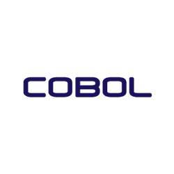
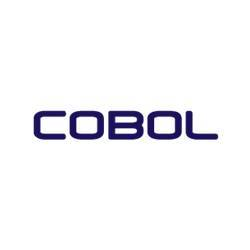

Justyna Kmiecik
Welcome to My Tech Odyssey 🚀
Greetings, fellow explorers of code and data! 👋 I'm Justyna, a dedicated FinanceTechFemme on a journey to bridge the worlds of finance and technology. With a passion for blockchain, a flair for data analysis, and a background in finances, I'm here to showcase my strides in this captivating domain.
What Awaits You
- Data Alchemist: Discover my projects that dive into data lakes, extracting meaningful insights and crafting narratives from raw information. Through Python, SQL, and more, I'm turning data into gold.
- Blockchain Pioneer: Venture into my blockchain escapades. From smart contract experiments to decentralized application prototypes, I'm venturing where the distributed ledger takes me.
- Finance Visionary: Explore my analyses of market trends, ICO assessments, and predictive models. I'm not just predicting the future; I'm shaping it with data-backed insights.
Join the Odyssey
As you browse through this collection, envision the stories each line of code and graph whispers. Join me on this dynamic odyssey as we rewrite the rules of finance through the language of technology. Together, we'll amplify the capabilities of both disciplines and carve a trailblazing path for the future.
I invite you to delve into my projects, explore my journey, and engage in this exciting dialogue of innovation. Let's connect, collaborate, and code the future we envision.
Grab your virtual explorer's hat, and let's embark on this adventure of code and numbers!


 
